📑 文章目录（13 节）
突然很想玩 INFINITAS，于是自己搭了一套站立游玩环境。
下面来逐一介绍这套环境的各种设备、参数设置以及高度尺寸。
※本文是以旧框体（非 Lightning 框体）为基准的。Lightning 框体规格的尺寸请参考其他站点的文章。
2022 年 8 月补充
下面这篇文章已经把截至 2022 年搭建 INFINITAS 环境所需的全部信息汇总到一起了。
控制器选购了 PHOENIXWAN
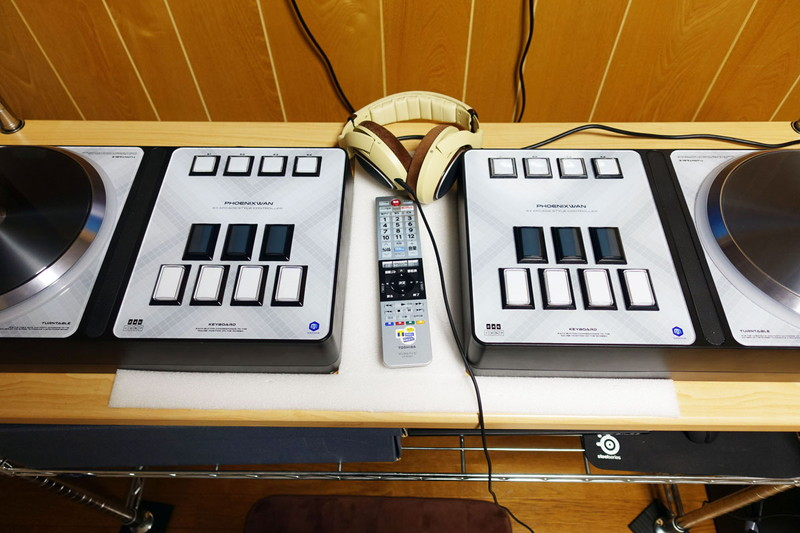
首先是控制器，我在 GAMO2 官方网站 买了两台支持调节转盘（皿）灵敏度的 PHOENIXWAN。
PHOENIXWAN 可以在 DAO 控官方店 或 GAMO2 官方店 购买，两家有什么区别我也不太清楚。在 GAMO2 下单后大概 10 天左右就送到了。
我选配了和街机相同的三和按键，算下来一台大概 5 万日元左右。
采用 0.49N 微动开关 ＋ 20g 弹簧的 DP 玩家（DPer）配置。
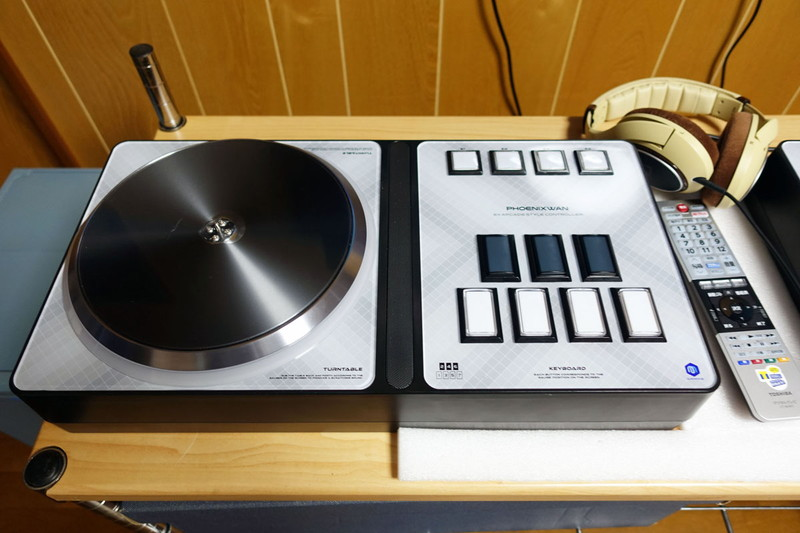
转盘表面是类似乙烯基（塑料膜）的材质，相比街机的 EMP 盘面（EMP 皿）没那么滑，但如果手汗很严重的话还是会照样打滑。
虽说可以另买街机的 EMP 盘面回来更换，但原装这块的触感我还挺喜欢的，所以打算等 GAMO2 商店上架替换用 EMP 盘面之前就先保持原样吧。
转盘灵敏度推荐 4/6
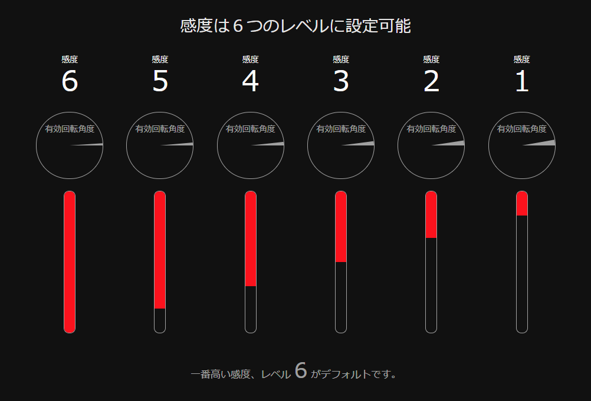
在 INFINITAS 中，把转盘灵敏度调到 6 档里的第 4 档时，手感最接近街机。
我自己算是比较擅长皿曲的类型，如果拿不准怎么调的话，先设成 4 档准没错。
静音改造建议还是要做
正在填隔音泥（パテ埋め）～真好玩 pic.twitter.com/wXubQzhB1Y
— かみゆー (@kmy573) February 28, 2019
PHOENIXWAN 采用的是塑料外壳，为了做静音改造，我在里面填了隔音泥（パテ埋め）。
腔体内部的空腔共鸣声减弱了非常多，变成了“啪嗒啪嗒”那种挺舒服的打键声。
根据电脑设置不同，关机后转盘灯可能一直亮着
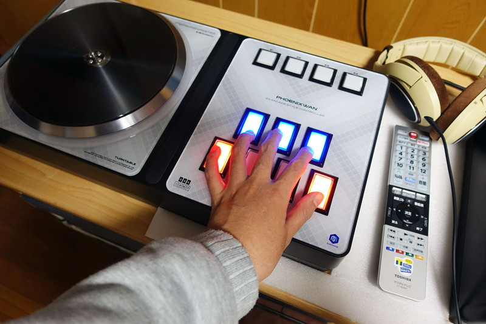
转盘的 LED 灯效其实挺好看的，但根据电脑主板设置（印象里可以在 BIOS 里改）不同，电脑关机后转盘灯也会一直亮着，所以我干脆把它关掉了。
反正打歌的时候转盘亮不亮灯也没什么关系嘛。
地面到按键的高度约为 90cm 减去鞋底厚度
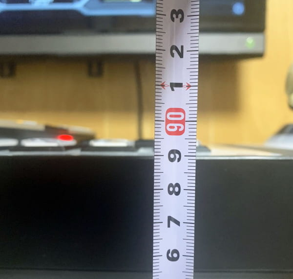
地面到按键表面的高度约为 90cm。
实际在家赤脚或穿袜子玩时需要减去平时穿的鞋底厚度——我之前有一次换了双和平时不一样的鞋去机厅打 IIDX，结果完全打不出状态，所以这个高度误差最好控制在 1cm 以内。
普通运动鞋的鞋底厚度一般在 2～3cm 左右，所以在家里可以把台面调到 87～88cm 左右，或者直接穿着拖鞋来打。
放控制器的架子我用的是 Luminous 金属置物架，只把顶层换成了木质层板。
虽然连接处比较容易开裂，东西本身做工不算太好，但用到现在也撑了挺长时间了，姑且算凑合能用吧。
打皿曲时架子很容易左右晃动，所以之后打算在下层多压点重物，或者换一张更结实的桌子。
其他尺寸
・1P 侧 7 键右边缘 ～ 2P 侧 1 键左边缘之间的距离：约 20cm
游戏用电视果然还得选 REGZA（据说如此）
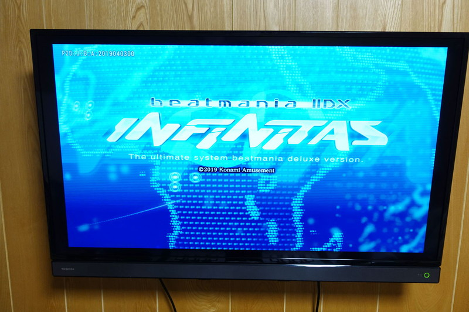
液晶电视我没怎么做功课，直接买了口碑不错、游戏模式延迟较低的“REGZA 40V31”并做了壁挂安装。
实际玩起来并没有感受到严重延迟，残影程度大概跟机厅显示器差不多，完全不影响游玩。
※2020 年 8 月补充
由于 INFINITAS 已经支持 120fps，现在新买的话“REGZA 43Z730X”看起来会更合适。（参考：http://blog.livedoor.jp/dbm_capture/archives/52340891.html）
不过普通的石膏板墙面或租来的房子很难打孔壁挂，一般还是用高度 110cm 左右的金属置物架会更现实。
地面到判定线的高度为 130cm
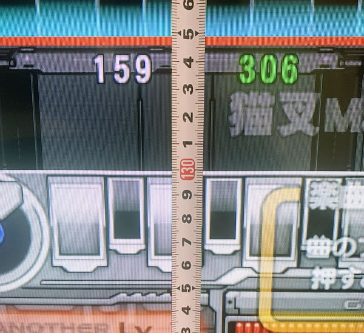
我把地面到判定线的高度调整到了约 130cm。
虽然有些网站上写的是 127cm，但凭体感我觉得 130cm 没什么问题。（因为不是自己去机厅实测的所以也不敢打包票，如果记错了请多包涵）
其他尺寸
・显示器 ～ 白键下边缘之间的水平距离：约 45cm
画面色彩参数调整必不可少
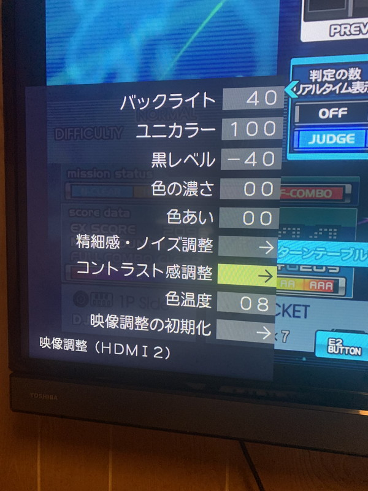
我家的电视画面设置如图所示。这是以柔彩音符（Pastel Notes）为基准调的，如果用默认音符皮肤的话可能会不太好辨认。
刚上手试玩时的第一印象就是“太白！太亮！太刺眼！”，所以画面调整绝对是少不了的。
这部分也就只能靠自己的眼睛凭感觉慢慢调了。
如何把 40 英寸液晶电视调成相当于 37 英寸的画面尺寸
想用与旧机厅框体相同尺寸的画面玩 INFINITAS 时，由于现在市面上已经不再生产 37 英寸电视了，通常只能在 40～43 英寸之间选择。
这样一来，要么把电视放得稍微远一点，要么就得在显示端进行画面尺寸缩放。
如果使用的是 GeForce 系列（NVIDIA）显卡，可以按以下步骤缩放画面尺寸：
1. 在桌面空白处点击右键，打开“NVIDIA 控制面板”
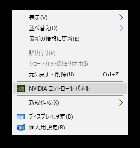
2. 从左侧菜单选择“调整桌面尺寸和位置”
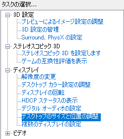
3. 点击“大小调整”标签页
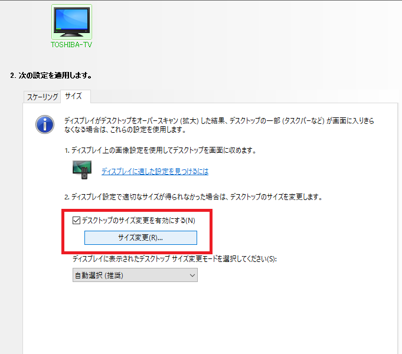
4. 调整桌面显示尺寸
以 40 英寸 REGZA 为例，把尺寸调成 1786×1004 后，显示面积就非常接近 37 英寸了。
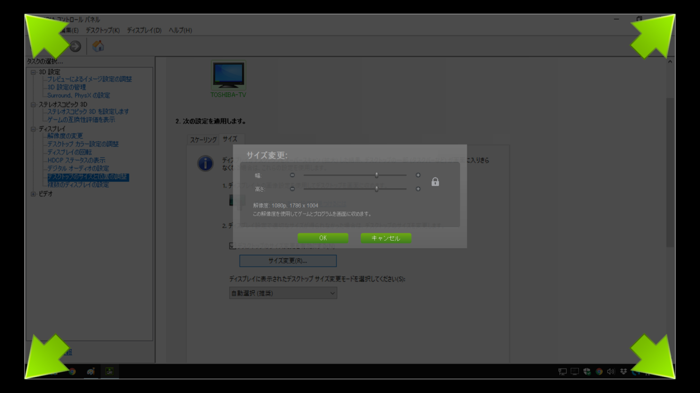
5. 在“更改分辨率”中将分辨率设为 1280×720，刷新率设为 60Hz
虽然可能是心理作用，但把分辨率对齐到 INFINITAS 原生的 1280×720 之后，感觉判定漂移和延迟都改善了一些。
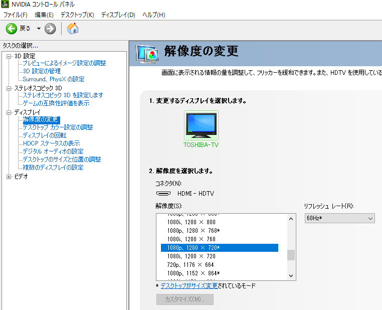
【重要】将最大预渲染帧数设为 1，并开启垂直同步
在我的环境下，如果不做这项设置，画面就会出现严重撕裂（Tearing），根本没法正常玩。
- 在 NVIDIA 控制面板中打开“管理 3D 设置”
- 在程序设置中选择 IIDX INFINITAS
- 将“最大预渲染帧数”设为 1，“垂直同步”设为“开”
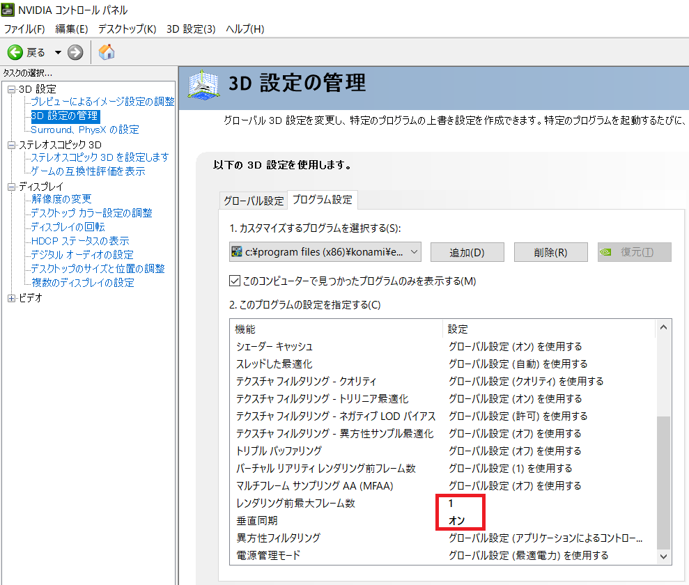
其他 PC 配置与音频设备
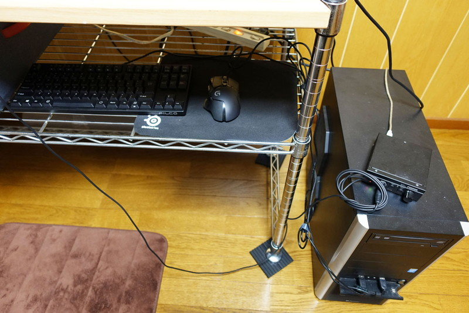
电脑是大约 5～6 年前在 TSUKUMO（九十九）定制组装（BTO）的台式机。
最近新换了一台游戏电脑，就把这台旧机器专门用来跑 INFINITAS 了。
主要配置如下：
- CPU：Core i5
- GPU：GTX 1060
- 内存：16GB
- 系统：Windows 10 Home
跑 INFINITAS 算是绰绰有余的配置了。
就算一边直播一边玩应该也轻轻松松（虽然我并没有直播的打算）。
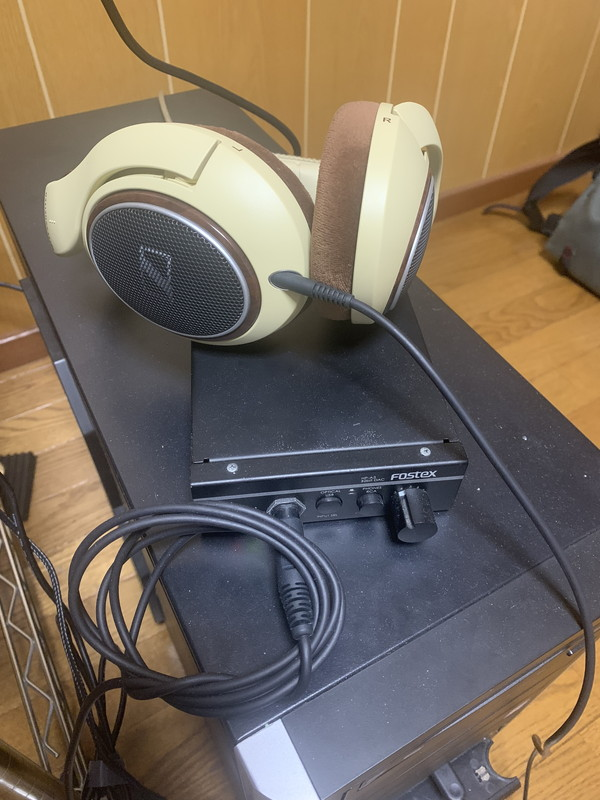
音频环境是用一台名为“FOSTEX HP-A3”的 USB-DAC 解码耳放，接上“SENNHEISER HD598”耳机。
虽然可能还是会有一点延迟，但大概比直接从电视输出声音要好不少。
我觉得已经相当接近机厅框体的体验了
经过一番折腾摸索，感觉现在已经非常接近平时在机厅里打的框体手感了。
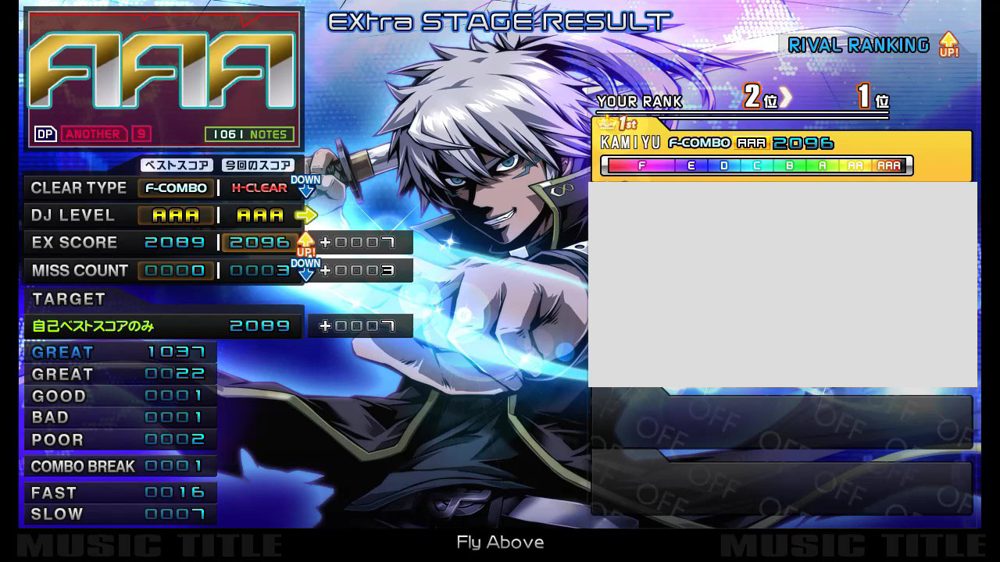
试打了用来对判定的经典曲目 FlyAbove(DPA)，我街机的个人最好成绩刚好在 2100 分左右，看这个发挥，单点准度基本没什么问题了。
顺带一提，我在机厅时的设置是：
- SPADA 框体
- 绿数字 302
- 判定时机 +0.6
而在家玩 INFINITAS 目前用的是：
- 绿数字 306
- 判定时机 +1.9
以后继续玩一段时间，如果再发现什么新心得，会再随时回来更新补充。
💬 读者评论与作者答疑（3 组对话）